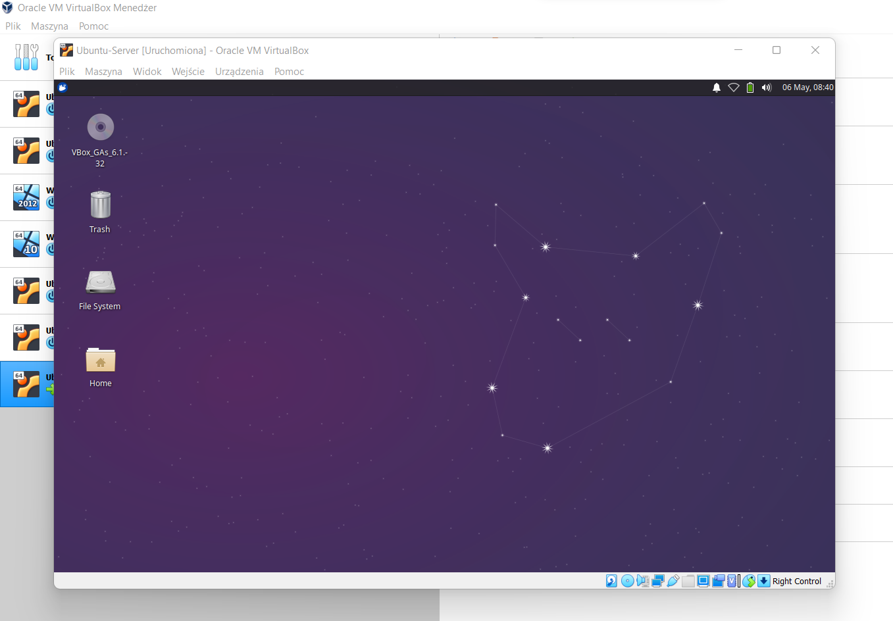

Przed rozpoczęciem instalacji skonfiguruj maszynę. Pierwsza karta sieciowa jako NAT druga jako Sieć wewnętrzna. Pierwszy ekran instalacji Ubuntu server prosi nas o wybranie języka. Wybieramy English
Pomijamy aktualizację. Wykonamy ją po instalacji systemu.
Jako klawiaturę domyślną wybieramy Polish aby mieć dostęp do polskich znaków takich jak ą, ś, ć, ę itd.
Instalator wykrył nasze dwie karty sieciowe. Opcja "Create bond" pozwoli nam na utworzenie z kilku interfejsów sieciowych jeden wirtualny dzięki czemu zwiększymy przepustowość oraz w razie awarii reszta kart sieciowych będzie mogła dalej kontynuować pracę. Na razie tego nie potrzebujemy. Skonfigurujmy nasz interfejs sieci wewnętrznej.
Wybieramy manualne ustawienie adresu IPv4 (statyczne)
"Subnet" to adres sieci z maską.
"Address" to IP interfejsu sieciowego
Tu taj możemy wpisać adres serwera Proxy. Pomińmy ten etap.
To samo tyczy się adresem serwera lustrzanego
Jeżeli chcesz podzielić dysk na mniejsze partycje skorzystaj z "Custom storage layout". Z racji że instalacja odbywa się na VirtualBox automatycznego tworzenia partycji z zastosowaniem LVM dla dynamicznego dysku wirtualnego.
Linux utworzył nam trzy partycje
partition 1 - program rozruchowy grub
partition 2 - przestrzeń dla /boot
partition 3 - obszar roboczy
Zatwierdzamy opcją "Done"
Pojawia się komunikat o możliwej utracie danych poprzez format dysku klikamy "Continue" i przechodzimy dalej.
Tworzymy profil "sudersa" czyli naszego użytkownika będącego w grupie super użytkowników. Jego nazwa niech będzie Egzamin. Nazwa serwera przykładowo ubuntu-server-vb (nie może mieć dużych liter). Login taki sam jak nazwa tylko z małych liter, a hasało standardowo ZAQ!2wsx
Jeżeli korzystasz z rozszerzanego wsparcia dla firm korzystających z Ubuntu server możesz wpisać wygenerowanym na twoim koncie canonical token dostępowy.
Od razu możemy zainstalować SSH nie konfigurując go.
Mamy też opcję zainstalowania od razu dodatkowe usługi i role dla naszego serwera. Możemy pominąć.
Rozpoczyna się instalacja można się przełączyć na pełen wgląd w logi procesu instalacji.
Po instalacji restartujemy wybierając opcje "Reboot now"
Podczas instalacji tworzyliśmy użytkownika i konfigurowaliśmy interfejsy sieciowe, do tego procesu potrzebna była specjalna usługa cloud-init Powiadomienia z tej usługi mogą być uciążliwe, wyłączmy je. Tworząc plik w odpowiednim katalogu:
sudo touch /etc/cloud/cloud-init.disablea następnie zrestartujmy system
Dokonajmy aktualizacji:
sudo apt-get update
sudo apt-get upgrade

Możemy dodać GUI aby nie było tak smutno :). Zainstalujmy tasksel.
Komenda do instalacji pakietów to
sudo apt-get install "nazwa pakietu"
i uruchommy go sudo tasksel
Teraz za pomocą spacji wybierzmy odpowiednie oprogramowanie ja wybiorę Xubuntu dexktop.
Teraz rozpocznie się instalacja wybranych "softów"
Po zakończeniu instalacji wpisz reboot aby zrestartować system.
Po uruchomieniu Ubuntu server uruchomi się interfejs graficzny który zainstalowaliśmy
Zainstalujmy dodatki gościa VirtualBox
sudo add-apt-repository multiverse
sudo apt instal virtualbox-guest-dkms virtualbox-guest-x11
zatwierdzamy i czekamy.
Po udanej instalacji może być wymagany restart systemu.

Teraz mamy już gotowy Ubuntu sever z GUI Xubuntu oraz dodatkami Gościa VirtualBox